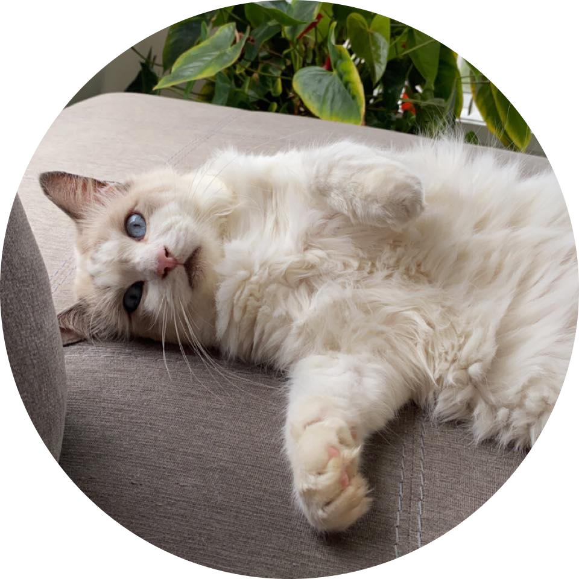

|  | The Story of Anely 📖 🖥 Control and Automation Engineer
I have a cat named Momo, but I like to call him Menyana. He is a ragdoll and he is very cute. |
| Date | Position | Company |
|---|---|---|
| 2019 - Current | Control and Automation Engineer | Komatsu Mining Corp. |
| 2018 | Electrical Engineering Intern | Downer Engineering |
| 2018-2019 | In2UNI Mentor | University of Wollongong |
| Software design for various AVR architecture microcontrollers. | ★★★★☆ | Configuring IFM i/O modules using CANOpen Magic. | ★★★☆☆ |
| HMI and GUI design and implementation. | ★★★★★ | Reading electrical and hydraulic schematics. | ★★★★☆ |
| Programming skills in c, c++, Python and MATLAB. | ★★★☆☆ | Development of deep learning architectures to perform segmentation of images. |
★★★☆☆ |
| Programming skills in LabVIEW, HTML, CSS and JavaSctipt. | ★★★★★ | Graphics design using GIMP, Photoshop and Corel Painshop Pro. | ★★★★☆ |
| Object-oriented programming. | ★★★★☆ | ||
| Software version control using SourceTree. | ★★★★☆ |